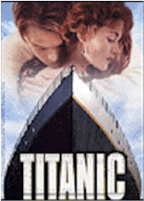
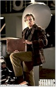
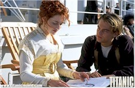
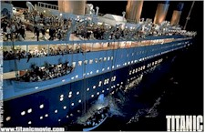
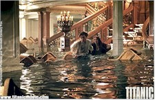
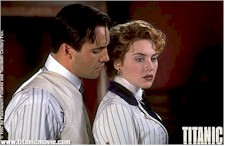
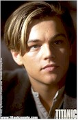

Contents | Features | Reviews | News | Archives | Store |
/store/Titanic/Titanic">|
| Movie Credits | /store/Titanic/Titanic">Buy It! |
Contents | Features | Reviews | News | Archives | Store |
/store/Titanic/Titanic">|
| Movie Credits | /store/Titanic/Titanic">Buy It! |
Titanic
Feature by Eddie
Cockrell
Posted 19 December 1997
|  | Directed by James Cameron Starring
Leonardo DiCaprio, Kate Winslet, Screenplay by James Cameron Produced by James Cameron, Jon Landau Edited by Conrad Buff, A.C.E., |
In retrospect, director James Cameron's entire career points to Titanic. A dazzling compendium of the latest in special effects as well as a shrewdly conceived, sincerely played love story that fits snugly within the pivotal historic event that brought the Gilded Age of technological advancement to a horrific halt, the movie is a sobering thrill ride entertaining enough to make a great deal of money – even at three hours and fourteen minutes the density of detail will compel repeated viewings – and imbued with an urgent sense of dramatic intensity sufficient to firmly separate it from by-the-numbers epics that substitute explosions for exposition.
 This particular
story, with its epochal collision of foolhardy confidence and indomitable spirit, clearly
has profound meaning to Cameron, whose decade-long run of machine-obsessed sagas from Terminator
(1984) through True Lies (1994) have tempered intricate, large-scale action set
pieces with precisely shaded human relationships in many cases so subtle they're either
underrated or ignored completely (Aliens, the restored Abyss). That passion,
occasionally headstrong but always sincere, is evident in every frame of this important
addition to the lore of pivotal moments in modern history and high-stakes contemporary
moviemaking.
This particular
story, with its epochal collision of foolhardy confidence and indomitable spirit, clearly
has profound meaning to Cameron, whose decade-long run of machine-obsessed sagas from Terminator
(1984) through True Lies (1994) have tempered intricate, large-scale action set
pieces with precisely shaded human relationships in many cases so subtle they're either
underrated or ignored completely (Aliens, the restored Abyss). That passion,
occasionally headstrong but always sincere, is evident in every frame of this important
addition to the lore of pivotal moments in modern history and high-stakes contemporary
moviemaking.
In search of the legendary "Heart of the Ocean," a priceless jewel thought to have been lost when the R.M.S. Titanic struck an iceberg and sank in the freezing waters of the North Atlantic April 14 and 15, 1912, Brock Lovett (Bill Paxton) heads a complex salvage effort that fails to locate the diamond but yields a provocative, incredibly well-preserved sketch of a nude young woman wearing what appears to be the missing treasure around her neck (and little else). When news of the discovery reaches reclusive artist Rose Calvert (Gloria Stuart), she persuades her granddaughter Lizzie (Suzy Amis) to take her to Lovett's ship to see the drawing for herself. Once there, Rose makes a startling confirmation: she's the woman in the sketch, a previously unknown survivor of the catastrophe ("wasn't I a dish?" she asks mischievously). "Are you ready to back to Titanic?" Lovett asks; she is, and the movie does.
On the afternoon of April 10, 1912, the luxury liner, dubbed "the ship of dreams," is preparing for her maiden voyage from Southampton, England to New York City. Arriving for the journey are first class passengers Cal Hockley (Billy Zane), his fiancée Rose DeWitt Bukater (Kate Winslet), her mother Ruth (Frances Fisher) and his valet Spicer Lovejoy (David Warner). A short distance away, exuberant young American artist Jack Dawson (Leonardo DiCaprio) and his pal Fabrizio De Rossi (Danny Nucci) are winning steerage tickets in a poker game and race aboard at the last minute ("We don't have any lice, we're Americans," Dawson gushes to one crewman).
As the ship steams towards the open sea, it dwarfs surrounding vessels and prompts those who built and man it to rely on a reckless confidence. White Star Line chairman J. Bruce Ismay (Jonathan Hyde) persuades Captain E.J. Smith (Bernard Hill) to increase the behemoth's speed in pursuit of a record crossing time (Smith complies with seeming reluctance), while Master Ship Builder Thomas Andrews (Victor Garber) shows off the luxurious amenities and explains that lifeboats aboard an "unsinkable ship" constitutes unnecessary clutter.
Meanwhile, Rose, suffocated by the rigid strata of the upper class ("an endless parade of parties and cotillions") and increasingly disenchanted with the boorishness and narcissism of Cal, is saved from a rash act by Jack. As their relationship deepens, class distinctions become more ever more apparent (he teaches her to spit and dance with merry abandon, she introduces him to luxury and poses for the aforementioned study) and Cal becomes more suspicious, ordering Lovejoy to shadow her every move.
About 100 minutes into the film, everything starts to go wrong at once. The ship hits an iceberg lookouts can't see until it's too late ("no binoculars since Southampton," complains one crewman in one of many factual asides scattered throughout the script), while the relationship between Jack and Rose, recently consummated below decks in a the back seat of a shiny new automobile, is interrupted when Cal frames Jack with the theft of the jewel and the artist is handcuffed to a pipe below decks. As the great ship begins to sink, breaking apart in the process, Rose and Jack do their best to find each other and survive in the midst of the chaos surrounding them.
DiCaprio and Winslet's effortless chemistry is what sells the fictional story, and it is more than enough to make up for the cartoonishness of Zane (in a thankless but necessarily villainous role that could've come straight out of a silent film of the period). Winslet particularly is convincing as the about-to-be-emancipated Rose, who actually seems to harden as the film progresses from a voluptuous, slightly spoiled girl of privilege to a slightly haunted, sinewy survivor by the time she hits the water. Rose's personal journey to mature womanhood is much more satisfying than Jack's inscrutable swagger to love. DiCaprio begins the movie as a devil-may-care hustler and ends it a strident, obsessive cheerleader for Rose's survival. Even if there was more to Jack than written, the actor doesn't seem to be on the same page as everyone else, preferring a jarringly contemporary reading of his character to the more modulated approach of the rest of the company.
The supporting players are uniformly fine, with Kathy Bates a standout as the free-spirited Mrs. J.J. "Molly" Brown ("Hey, Astor!" she yells at one millionaire), who from a lifeboat gets to deliver the awestruck line that perhaps best sums up the visual theme spirit of the film: "Now there's something you don't see every day" (subsequently, of course, Brown was given the nickname "Unsinkable"). Also memorable is Gloria Stuart as the older Rose; she's a Hollywood veteran whose credits include James Whale's The Old Dark House (1932) and Busby Berkeley's Gold Diggers of 1935 (come to think of it, Cameron embodies many of the chief strengths of those directors). As sort of surrogate Cameron, Paxton is all swashbuckling swagger as Lovett ("It still gets me every time," he says during a dive. "To see the sad ruin of the great ship sitting here..."), while Lewis Abernathy registers as his wise-cracking assistant. And credit must be given to the hundreds of extras and stunt people, who, digitally manipulated or not, provide a milling multitude that vividly portrays the breadth of the disaster.
A vast mythology has sprung up around the sinking of the Titanic, tales of bravery, cowardice, chicanery and courage from among those 2,223 people on board and the shockingly small 32 percent of that number who survived. Although the fictional story takes center stage throughout the film, many of these stories are hinted at, including appearances by Brown and cameos by Colonel Archibald Gracie (Bernard Fox, Bewitched's Dr. Bombay), John Jacob Astor (Eric Braeden), Benjamin Guggenheim (veteran character actor Michael Ensign, who had a small part in Lord Grade's 1980 Raise the Titanic!) and a brief, unexplained overhead shot of a dignified elderly couple spooned in a bed as water rushes around them (this may be a variation on the legendary story of Mr. and Mrs. Isidor Strauss, who refused to part, Mrs. Strauss explaining "I will not leave my husband. We have been together all these years and I'll not leave him now."). Even Cameron regular Jenette Goldstein (Private Vasquez in Aliens, Janelle Voight in Terminator 2: Judgment Day) has a few brief moments as an Irish mother soothing her children.
Inevitably for an enterprise this great, however, there are moments where history is streamlined and emotions given a contemporary spin. Ismay's role as the villain of the piece is made explicit (some records still insistent the order to increase speed was never uttered), while the heartbroken Andrews, nephew of boilerman turned baron Lord W.J. Pirrie (chairman of Harland and Wolff, the shipbuilding firm that constructed the Titanic) is given the same pensive pose by a fireplace struck by actor Michael Goodliffe in A Night to Remember (1958), the excellent British version of the tragedy ("I'm sorry I didn't build you a stronger ship," he says to Rose). Of the numerous fates eyewitnesses testified befell the stunned Captain Smith (at least five were recorded), Cameron's placement of "E.J." in the wheelhouse as it implodes turns an eternal mystery into a moment of quiet dignity.
By the same token, many of the real-life heroics depicted in this version of the sinking have been omitted. Universally acknowledged savior Captain Charles Henry Rostron of the Carpathia – the first ship to arrive at the sight of the disaster – is written out completely (he was later awarded a Congressional Medal of Honor for his efforts). Second Officer Charles Herbert Lightoller (Johnny Phillips), who survived after supervising the evacuation efforts and commandeering an overturned lifeboat for the four hours it took help to arrive, is on hand (Night was built around him as played by Kenneth More) but relegated to the background (as are Lowe, Pitman, Bride and other officers and crew whose stories have become the stuff of legend).
The economics of the story extend to logistics and performances as well. For a ship as big as the Titanic, Jack and Rose have remarkable luck at locating each other – particularly during the panic immediately prior to the ship's foundering. And a pivotal scene, in which Rose must help Jack break a pair of handcuffs, plays as a dreadfully silly improvisation ("Rose!" "Jack!" "Rose!" "Jack!", and this from DiCaprio: "This could be bad!" and "I'll wait here!"). And about that shot from the trailer that's been playing for weeks now, with Jack and his buddy on the bow: in 1912, did young men elated by the promise of life really pump their fists into the air and break loose with a rebel yell?
But many of the film's flourishes are inspired, from the computer-generated simulation of the sinking seen early in the film that helps the audience envision the enormous futility of the rescue efforts to the gratuitous but fascinating chase through the bowels of the ship and the Jack's illogical but dramatically devastating insistence that he and Rose stay on the ship as long as possible before going into the water (Archibald Gracie later testified that this tactic almost killed him).
Cameron's dramatic instincts are often underrated, as evidenced by the backstory footage restored to Terminator 2: Judgment Day and the retention of the Ed Harris-Mary Elizabeth Mastrontonio story arc at the expense of the tsunami subplot in The Abyss. Yet he's at his best mixing the grand, complicated image with the fragile, sincere personal moment: "I like using hard-core technological means to create an emotion," he told Premiere writer John H. Richardson. "That's what most fascinates me about this project – nothing thrills me more than being on a green-screen stage on some complex crane rig during a moment that is so delicate emotionally that if you get that part of it wrong, all that other stuff is for nothing. Like the scene where he's at the bow of the ship after she's told him that she can't see him, and he's just sitting there, kind of morose, thinking about that with the wind blowing through his hair, and she walks up behind him and just sort of appears there, out of focus, and says, 'I changed my mind.' His whole life turns on that one moment, and to get it we had to build a ship that didn't exist anymore..." Apparently, this is the way he talks, but there's a lot of truth there. In the brave but more than a little crazy world of modern moviemaking, the films that risk the most to find that balance are the ones that will endure – or maybe not.
In this way the director avoids perhaps the most serious pitfall of even the best digital effects, what might be called the cheapness of the image. It's one thing to create a composite of crowds running around on a simulated deck, quite another to have a large number of people swarming over an actual boat – if you know that what's on screen actually happened, and wasn't just tapped into a hard drive somewhere in Southern California. Seen in this light, Cameron's determination to build a 90% scale model of the boat and dress it with the same carpets, silverware and other details of the original may seem outlandish but pays enormous emotional dividends when combined with the inevitable digitized wonders (dolphins keeping pace with the ship in the open sea, the selectively frosted breath of the actors and numerous other shots that probably only a professional would notice). As with the most affecting sequences in, say, Forrest Gump (1994), the best digitized effects are the ones that contribute to the story – the floating feather, Lieutenant Dan's missing legs – but don't have the flash of Independence Day's dancing cars or Starship Trooper's zillion bugs. Unfortunately, these tend to be the effects that cost the most, provide the filmmakers with the biggest headaches – and are least noticeable to the suits who must arrange and defend the financing.
Can Titanic earn the astronomical amounts of money (now estimated at between $350 and $400 million worldwide, depending on the source) required by the two studios that bankrolled it to just break even – before beginning to think about profits ? As recently reported in a popular weekly news magazine, Paramount's mysteriously popular 1996 action film Mission: Impossible made $422 million, while this year's cleverly made and even more cleverly marketed Men in Black grossed $527 million (even Waterworld, 1995's entry in the Most Expensive Movie Ever Made sweepstakes at $175 million, is reported to have turned a profit – eventually). And Titanic must pull this off without the money-in-the-bank fame of Tom Cruise (or any bankable star, for that matter), cute aliens ripe for cross-merchandising, jingoistic save-the-world theatrics or Kevin Costner's aw-shucks stoicism.
Regardless of the movie's economic fate (Nitrate Online predicts success), Titanic represents a kind of craftsmanship that is becoming increasingly rare anywhere, much less the pressurized atmosphere of the 1990s version of Hollywood studio production. What is important about the film – and what will be a key contributor to it's box office success – is a sincerity, an emotional truth that comes from being convinced of the rightness of your mission and generates the energy to see that task through. James Cameron has it, and Titanic has it, too.
Contents | Features | Reviews | News | Archives | Store
Copyright © 1999 by Nitrate Productions, Inc. All Rights Reserved.